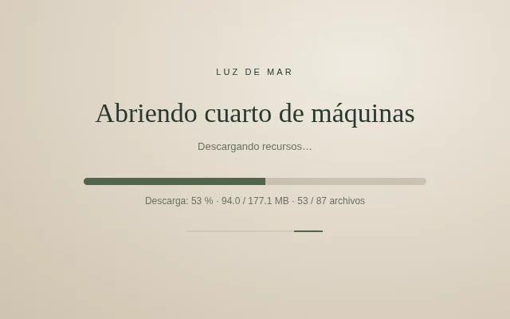
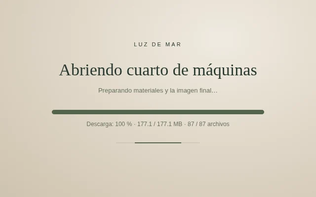
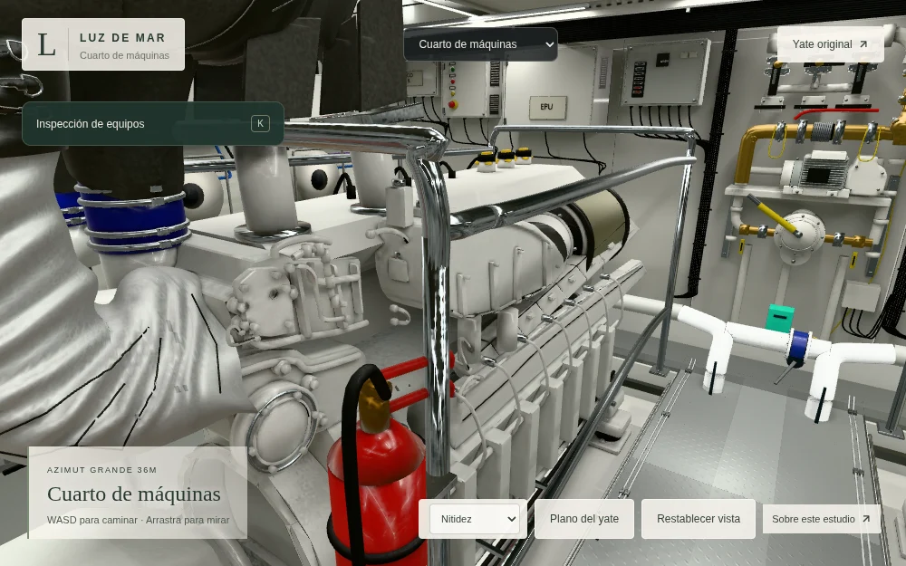

La vista inicial espera 87 recursos de escena, ambos niveles de detalle de los motores, el frente eléctrico, el mamparo, el foso, los filtros y la selección. 177.1 MB de contenido verificado en este perfil. Las dependencias compartidas se contabilizan una sola vez.
La barra mide los bytes recibidos. Completar la descarga no retira el loader: después se preparan las texturas, los materiales, los buffers de ambos niveles de detalle, las sombras y el primer cuadro. Una comprobación WebGL2 sin bloquear el hilo confirma su finalización antes de mostrarlo.



Se verificaron siete dependencias retrasadas, fallos de descarga y compilación con reintento, fallos del JavaScript y CSS de arranque, pestaña oculta, cancelación de una solicitud obsoleta, inspección diferida con progreso, tres ciclos de salas, recursos estables, recuperación del contexto y dibujo bajo demanda. La selección conserva restauración exacta.
Los buffers de descarga pasan de un máximo de 177.1 MiB a 0 bytes al finalizar. La memoria gráfica estimada inicial es 659.2 MiB; excluye MSAA, lienzo y cachés del controlador. Chromium/SwiftShader comprueba corrección y no acredita FPS en GPU física.
Los 629 archivos originales permanecen intactos. También se preservaron 400 archivos anteriores del visor ajenos al código recompilado, incluidos modelos, materiales e iluminación.
Abrir el cuarto · Informe completo · Inventario de dependencias